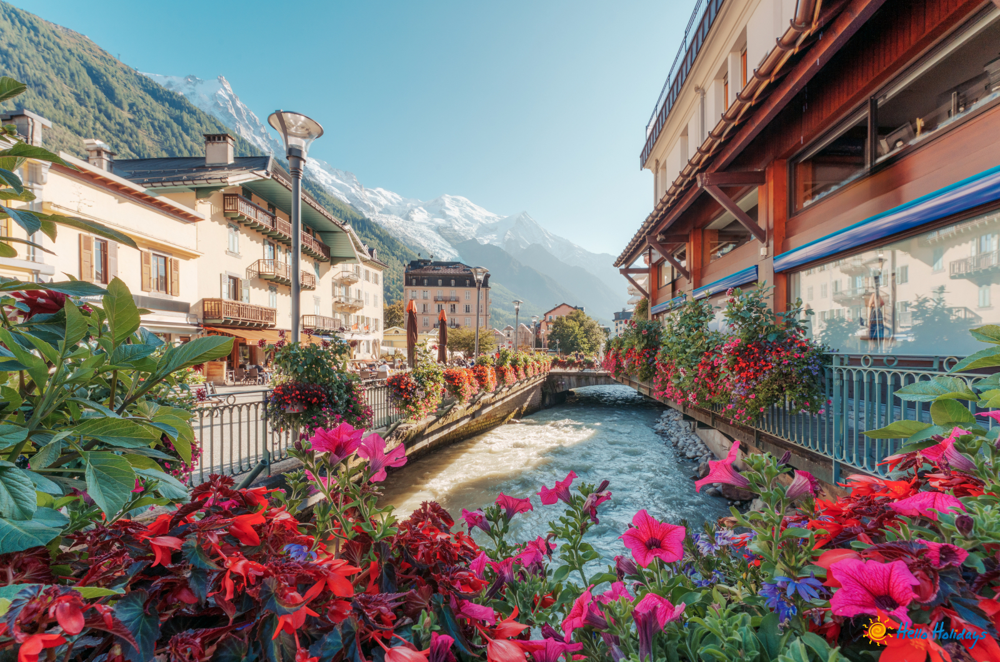
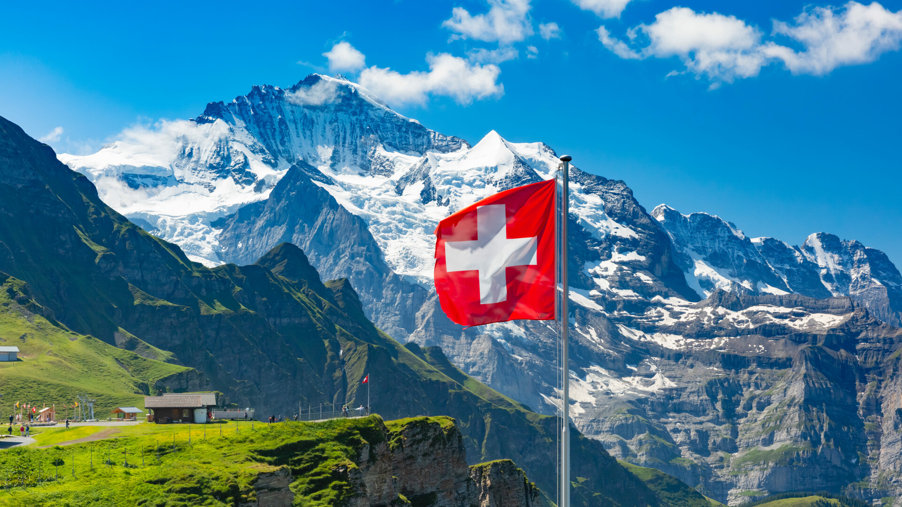

Elveția este o țară mică, dar foarte diversă, aflată în centrul Europei și înconjurată de cinci vecini: Germania, Franța, Italia, Austria și Liechtenstein. Relieful său este dominat de Munții Alpi și de Munții Jura, care oferă peisaje spectaculoase și atrag turiști pasionați de schi, drumeții și natură. Zona centrală, cunoscută drept „Mittelland”, cuprinde câmpii fertile și orașe importante. Țara este bogată și în lacuri glaciare, dintre care se remarcă Lacul Geneva, Lacul Zurich și Lacul Lucerna, care adaugă frumusețe și diversitate peisajului. 
Un aspect unic al Elveției este bogăția culturală și lingvistică. Țara are patru limbi oficiale: germana, franceza, italiana și retoromana, fiecare fiind dominantă în regiuni diferite. Statul este organizat ca o confederație formată din 26 de cantoane, fiecare cu tradițiile și legile sale, ceea ce reflectă respectul pentru autonomie și democrație. Capitala politică este Berna, dar orașele Zurich și Geneva sunt cele mai mari și mai influente. Zurich este un centru financiar global, iar Geneva este renumită pentru rolul său internațional, găzduind organizații precum ONU și Crucea Roșie. 
Elveția este cunoscută în întreaga lume pentru neutralitatea sa politică, pe care o respectă de mai multe secole. Această poziție i-a permis să devină un loc sigur pentru diplomație și cooperare internațională. Economia țării este foarte dezvoltată și stabilă, având ca piloni sistemul bancar, industria farmaceutică, tehnologia și turismul. Produsele elvețiene celebre includ ceasurile de lux, ciocolata fină și brânzeturile tradiționale. De asemenea, sistemul educațional și de cercetare este de top, atrăgând specialiști și studenți din toată lumea. Toate acestea fac din Elveția un model de echilibru între tradiție, inovație și calitate a vieții.